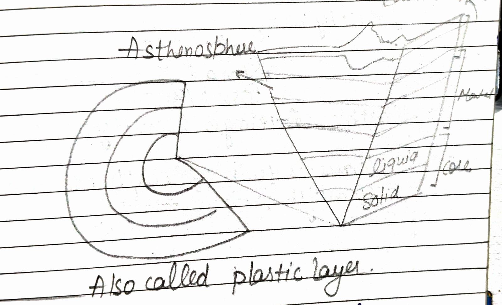
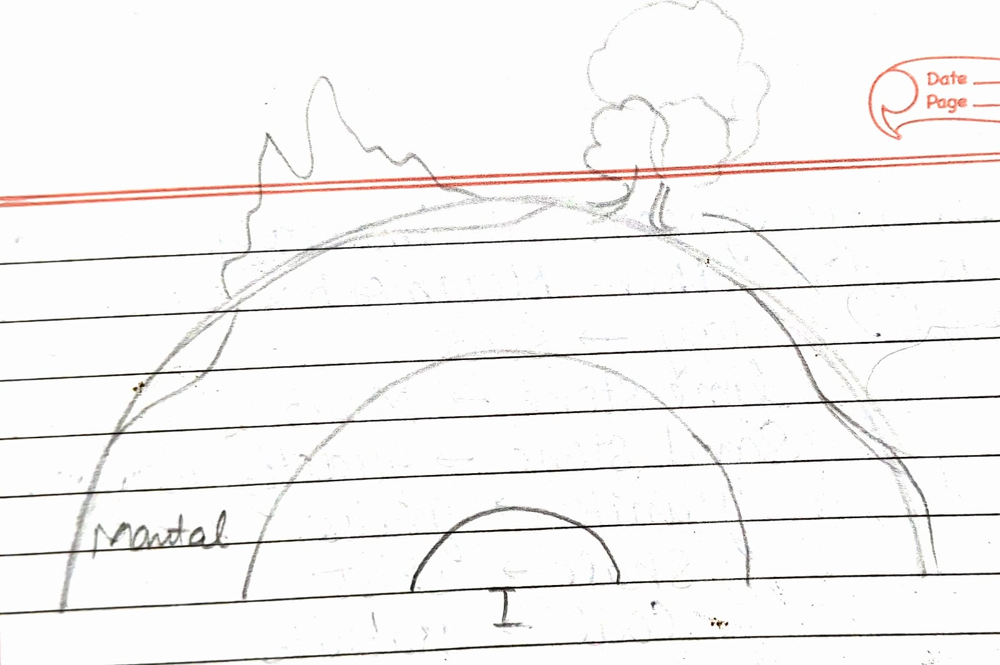
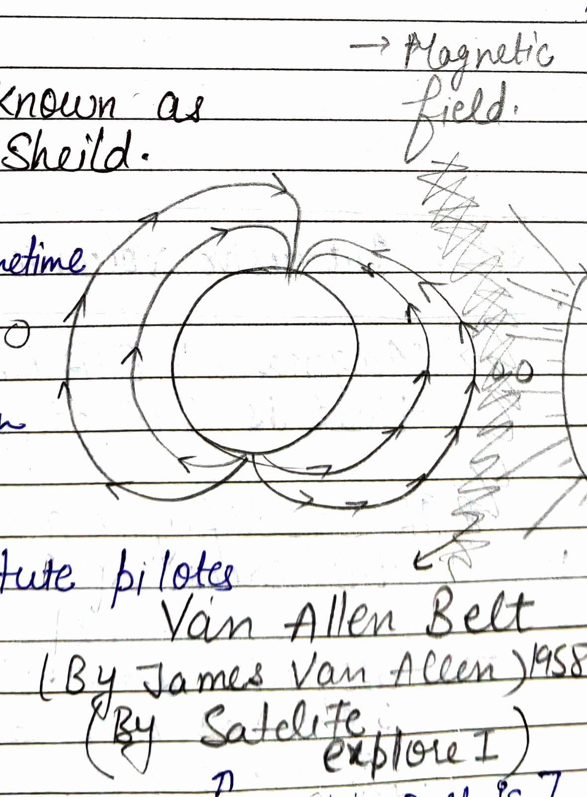
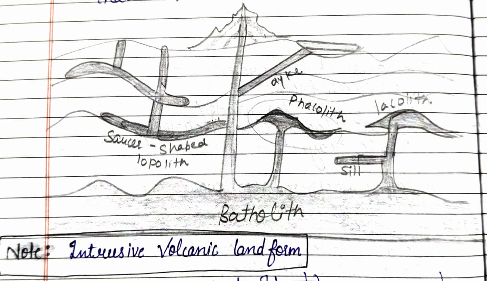

EARTH
Earth is 4500 Million years old.
Crust → 0 – 100 km
Mantle → 100 – 2900 km
Core → 2900 – 6370
- Outer Core : 2900 – 5100
- Inner Core : 5100 – 6370 km

Lithosphere : It contain crust and magma that is in mantle.
Mantle contain Mesosphere and Asthenosphere.
Core : It contain Barysphere.
Sial : Silica + Aluminium = 2.7 density
Sima : Silica + Magnesium = 3 density
°C = 5/9 (F – 32)
°F = 9/5 C – 32

Firstly there is only one continent called PANGEA and left this water named
Super Ocean → panthalassa
Theories
1912 – Continental Drift Theory : By Alfred Wegener
1960–62 – Tectonic Plate Theory
1960–62 – Convectional Current Theory : Arthur Holmes
CRUST
Igneous → Sedimentary → Metamorphic
1. Igneous
- Intrusive (Always in crystalline form)
- Extrusive
example of intrusive : granite, diorite & gabbro, basalt

2. Sedimentary
(Always in layer form)
Become with dead plants, dead animals and all other waste.
exp : Sand stone, lime stone, shale stone, clay stone
3. Metamorphic
(Formed with igneous or sedimentary)
change + chemical reaction of heat pressure
When any igneous, sedimentary rock change their state then metamorphic rock formed.
example :
- clay → slate
- lime stone → marble
- sand stone → quartzite
- granite → gneiss
- shale → schist
- coal → graphite
Equatorial Diameter – polar diameter of Earth = 43 km
Also called plastic layer
Moho Discontinuity : Border b/w crust & mantle
Gutenberg discontinuity : Border b/w mantle & core

Oceanic crust
Continental crust → thicker
Density
Sial : 2.7
Sima : 3
Core : 13
Earth’s Average Density : 5.5
Venus is twin of earth so have density : 5.7
- Earth is also known as blue planet.
- Earth Move from West to East.
- North pole → Arctic Ocean
- South pole → Antarctica (continent)
Magnetic declination = 11°

Magnetosphere prevent us-earth from harmful solar winds / solar flares / charged particle / cosmic rays.
Magnetosphere also known as invisible radiation shield.
Solar flares are sometime have high intensity so scientist warn for radiocommunication get down.
Astronaut & high Altitude pilots they become prone to radiations.
Van Allen Belt
(By James Van Allen) 1958
(By Satellite Explorer 1)
Blackout due to failure of electronic power grid.
[1000–12000 km thick this Belt is]
Aurora
Aurora → jab humare sky me light Green, Red
Northern country of sky me light
Because of external solar flares.
- Auroras react with more intensity.
- It also effect our ozone layer.
Magma solidified 100 km till that rocks are called Batholith.
Note: Intrusive volcanic landform
Magma jab upar aur niche dono jagah jam jaye that is called phacolith.
If solidify magma stuck parallel to the crust is called sill.
Laccolith: In anticline fold presence of solidified magma over an area of 16 km (dome shaped)
B > S > L
Stock
Example of Batholith
Example of Batholith → Idaho Batholith
(BOISE National Park)
when magma solidified in or angular rocks are called dyke.
- sill → great whin sill of North East England
- dyke → Cleveland dyke of Yorkshire
- laccolith → Henry Mountain in Utah
- lopolith → Bushveld lopolith of Transvaal (S. Africa)
- phacolith → Corndon Hill Shropshire (England)
1st – Divergent
- plates are moving away from each other
- New crust take place of new area created are constructive plate movement
- Site where plate move away that is spreading site
Ex – mid atlantic Ridge is longest and highest mountain chain under the surface of Earth – North
Arabian and African plate are diverging and creating red sea and Gulf of aiden.
African plate itself is diverging & creating east african rift valley.
African plate → Nubian plate (Bigger)
→ somalian (Smallest)
Ocean Ocean divergent → expt. Mid Atlantic ridge
Continent Continent divergent : East African rift Valley
★ Block Mountains, Rift Valleys are formed by (Horst) (Graben) faulting
2nd – Convergent plate Movement
Heavier plate is subducted that is subduction zone.
example – Mariana trench
(Due to pacific and philippine plate)
Ring of fire : 70 to 80% earthquake & volcanose happen around
the pacific ocean hence it is called Ring of fire.
(Also circum pacific Belt)
- Ocean & Continent Convergent : It forms Fold Mountain
-
Continent – Continent Convergent : only convergence where density is same.
example – (Ural, Karakum)
3rd – Transverse Boundary movement
(it also called transform)
(Also called conservative plate boundary)
when the crust is neither produced nor destroyed bcz the plate slide horizontally passed each other.
Example
San Andreas fault.
It is not a volcanic activity zone but a earthquake produce.